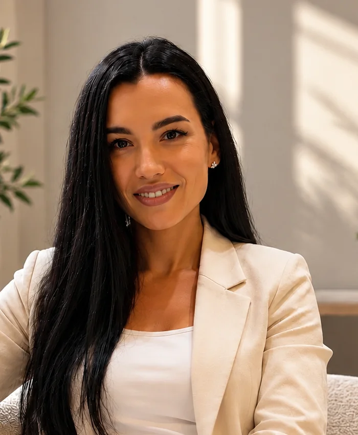
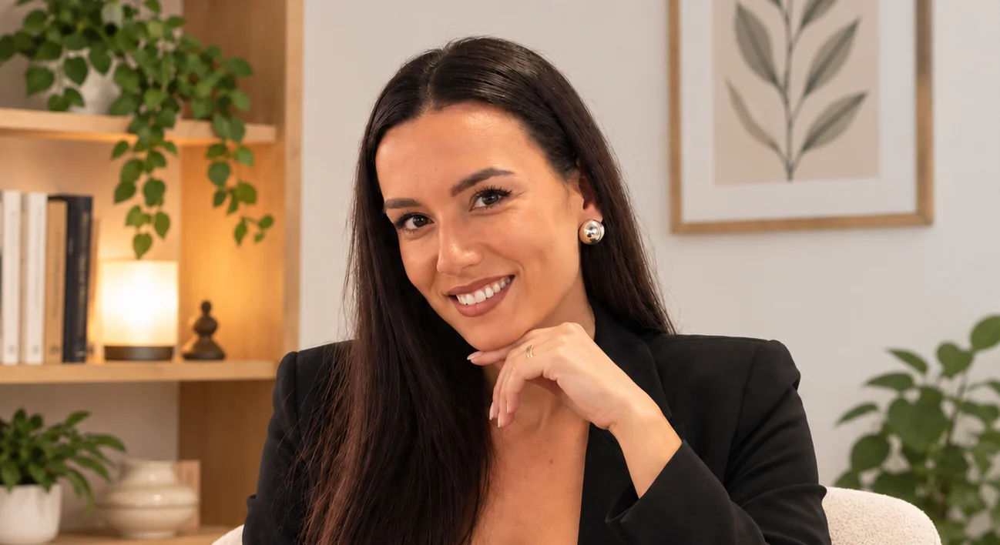
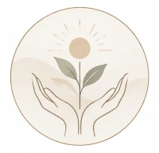
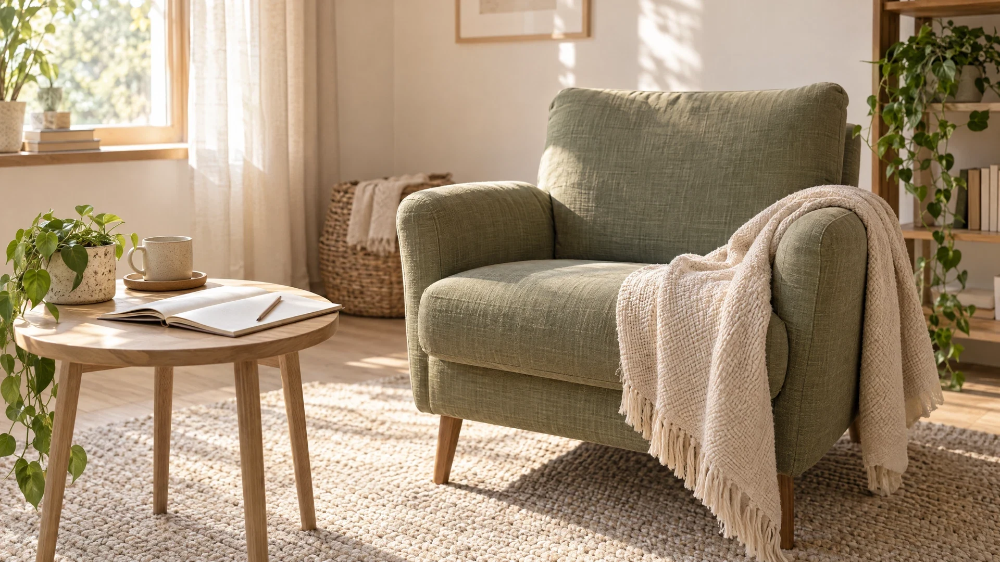
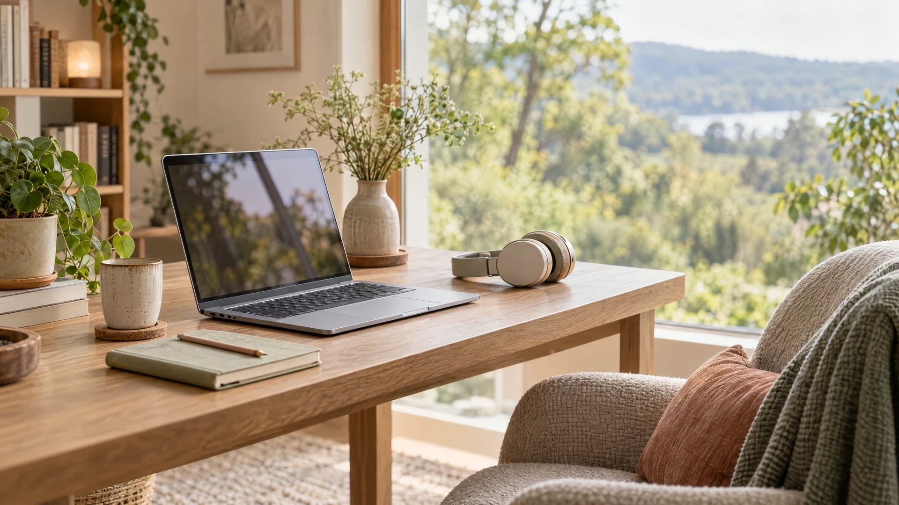

Моят подход
Слушам внимателно и подхождам към всеки човек поотделно. Важно ми е да се чувствате спокойно и да говорите открито.
Провеждам онлайн консултации по видеоразговор. Работим с вашето темпо и по това, което ви тежи в момента.

Психолог · Магистър по приложна психология
Понякога помага просто някой да ви изслуша,
без да ви съди и без да бърза.

Работя като психологЗА МЕН
Казвам се Антонина Петрова. Имам бакалавърска степен по „Психология“ и магистърска степен по „Приложна психология“ от Пловдивския университет „Паисий Хилендарски“. От 2018 г. работя като психолог в сферата на образованието, а днес предлагам и индивидуални онлайн консултации за възрастни и деца.
„Емпатията към хората и стремежът да разбирам техния вътрешен свят ме насочиха към психологията и я превърнаха в мое призвание.“
Работя с вашето темпо. Това, което споделите, остава между нас, в границите на професионалната етика и закона.
Образование и квалификацииСлушам внимателно и подхождам към всеки човек поотделно. Важно ми е да се чувствате спокойно и да говорите открито.

Да разберете по-добре какво се случва с вас и да намерите начин да се справяте с него.
Промяната идва постепенно, от среща на среща. Обикновено с нея идват повече разбиране за себе си и повече увереност.
С КАКВО МОГА ДА ПОМОГНА
Консултациите са индивидуални и онлайн. Ето с какво най-често идват хората при мен.
Напрежението се трупа и не намирате как да се успокоите.
Съмнявате се в себе си или не виждате силните си страни.
Трудно ви е да кажете „не“, или отношенията с близки хора ви изтощават.
Работата и задълженията изцеждат силите ви.
Пред важен избор сте или нещо в живота ви се променя.
Не сте сигурни дали темата ви е подходяща? Пишете ми
КОНСУЛТАЦИИ
Където и да се намирате,
стига да имате интернет.
Срещаме се по видеоразговор за 60 минути. Можете да се включите от вкъщи или от друго място, където никой няма да ви прекъсва.
Начина на работа нагласяме според това, от което имате нужда.
Запази час в Superdoc Часът се потвърждава при записване.Избирате свободен час в Superdoc или ми се обаждате. Часът се потвърждава при записването.

Говорим за това, което е важно за вас. Темпото и посоката определяме заедно.

Онлайн срещите не пасват на всеки. Затова в началото обсъждаме дали този формат е подходящ за вас.
ОБРАЗОВАНИЕ
Продължавам да се обучавам и след университета. Ето какво съм завършила досега.
Вижте дипломитеПловдивски университет „Паисий Хилендарски“
Професионална квалификация: психолог, учител по психология.
Пловдивски университет „Паисий Хилендарски“
Професионална квалификация: психолог.
Софийски университет „Св. Климент Охридски“
По педагогическа психология · 30 академични часа · 21.10.2022 г. Свидетелство, серия СУ-039322, рег. № 38363.
Софийски университет „Св. Климент Охридски“
По педагогическа психология · 60 академични часа · 24.09.2024 г. Свидетелство, серия СУ-024690, рег. № 27675.
„ЕвроПро“ ЕООД
Удостоверение, рег. № 2188/28.10.2024 г.
Великотърновски университет „Св. св. Кирил и Методий“
Удостоверение за професионално обучение.
Членувам в професионалната организация на психолозите у нас.
ДОКУМЕНТИ
Сканирани оригинали. Натиснете,
за да ги видите в пълен размер.
ОТЗИВИ
Благодаря на всички, които споделиха впечатленията си.
„Страхотен специалист и професионалист! Получих огромна подкрепа и помощ в адски труден за мен момент! Адмирации!“
„Изключителен професионалист с човешко отношение, внимание и разбиране! ❤️ Още от първата среща усещаш спокойствие, доверие и подкрепа. Подхожда с търпение, съпричастност и искрено желание да помогне. Чувстваш се изслушан, разбран и приет без осъждане. Препоръчвам от сърце на всеки, който има нужда от подкрепа и разбиране!“
„Прекрасен специалист с човешко отношение, разбиране и професионализъм! Изслушва с внимание и вдъхва спокойствие и доверие. Доверете ѝ се!“
„От първата консултация бих казала, че се чувствам по-спокойна и че проблемите ми имат валидация.“Откъс
От първата консултация бих казала, че се чувствам по-спокойна и че проблемите ми имат валидация. Изключително съм доволна от сеанса, смятам че изслушва и дава правилните насоки, стига да ги следвам както ми е посочила. Усеща се, че е професионалист, защото излъчваше топлина и разбиране, а не арогантност и объркване както при други психолози които съм посещавала. Ще продължа да работя с Антонина Петрова и определено препоръчвам да ѝ се доверите. Благодаря наистина за търпението, отделеното време и внимание към моите проблеми.
„Работата с Антонина Петрова беше най-добрата инвестиция в мен самата.“Откъс
Работата с Антонина Петрова беше най-добрата инвестиция в мен самата. Още от първия разговор тя успя да премахне напрежението и да ме предразположи да говоря напълно открито. Притежава рядък баланс между дълбока човечност, разбиране и изключителен професионализъм – не просто изслушва, а помага да разплетеш и най-сложните си мисли. След всяка среща имам усещане за лекота и с ясни, работещи стъпки за справяне. Ако търсите психолог, който наистина го е грижа и променя гледната точка, тя е правилният човек!
ПОЛЕЗНО
Ако не намерите отговор тук,
пишете ми.
Предлагам индивидуални онлайн консултации за възрастни и деца. Най-често работя по теми като стрес и тревожност, самооценка, лични граници и взаимоотношения, емоционално претоварване и житейски промени.
Най-често по видеоразговор. Можете да се включите отвсякъде, стига да имате интернет и тихо място.
Една консултация е 60 минути. За удобен час ми се обадете или се запишете в Superdoc.
Да. Пазя професионална тайна според етичните правила. Изключения има само когато законът или професионалните ми задължения го изискват.
Да. В началото обсъждаме дали онлайн срещите са удобни за вас и какво е добре да се промени.
За записване можете да ми се обадите на 0895 707 248, да ми изпратите имейл или да използвате линка към профила ми в Superdoc. Запитването не е автоматично потвърждение на час.
КОНТАКТИ
Обадете ми се или ми пишете, за да уточним удобен час и формат за консултация.
Базирана съм в Силистра. Консултациите се провеждат онлайн, с предварително записване.